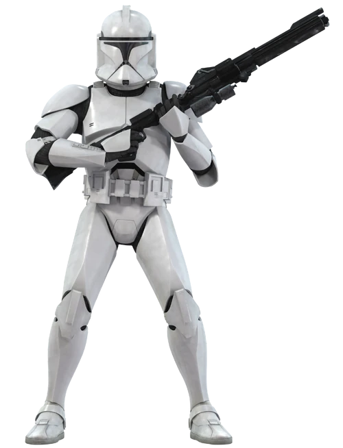
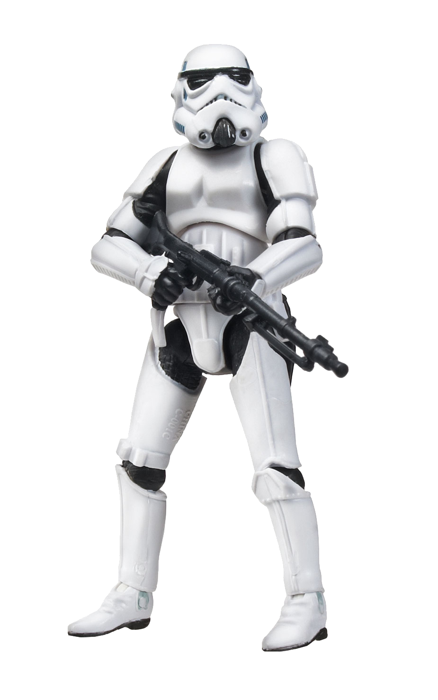

Klón katona
Az Egy új remény rohamosztagosainak megjelenése óta a fehér páncélba öltözött űrkatona a Star Wars média egyik legjellegzetesebb ikonja. A Galaktikus Köztársaság klónkatonái, akiket birodalmi megfelelőik előfutáraiként hoztak létre, névadó konfliktusuk, a klónok háborúja során szolgáltak. A klónok története A klónok támadása óta tovább mélyült különböző műsorokon, képregényeken, könyveken és más médiákon keresztül, összekapcsolva eredetüket a mandaloriaiakkal, örökségüket pedig a Galaktikus Birodalommal és a Lázadással.
Első rend katona
Az Első Rend, vagy egyszerűen a Rend egy fasiszta katonai junta volt a galaxis ismeretlen régióiban az Új Köztársaság korszakában. Az Első Rendet egy Legfelsőbb Vezető irányította a mobil központjukból, nem pedig egy hagyományos planetáris fővárosból. Egy militarista diktatúra, amely meg akarta szüntetni a rendetlenséget, és fanatikus odaadással viseltetett a rend totalitárius fogalmai iránt, és megvetette a demokráciát. Ebből a célból hidegháborúba keveredett az Új Köztársasággal, és befolyást terjesztett az ismeretlen űr határain túlról, végül az Első Rend inváziót rendezett a galaxis ellen, de az Ellenállás és a Jedi Rend visszaverte őket, ami az Első Rend uralmának összeomlását okozta.

Rohamosztagos
A rohamosztagosok (ST-k) – más néven birodalmi rohamosztagosok, a köznyelvben "vödörfejűek" – a Galaktikus Birodalom elit rohamcsapatai voltak, és a Rohamosztagos Hadtest részét képezték, amely egy független katonai ág a Birodalmi Hadsereg alatt. Ezek az elit, engedelmes és buzgó katonák fehér plasztoid lemezekből álló páncélt viseltek egy fekete testkesztyű felett, és standard fegyverük az E-11 közepes romboló puska volt. A standard változatú katona mellett különböző speciális egységek, például felderítő katonák és hógárdisták alkották a hadtest sorait.